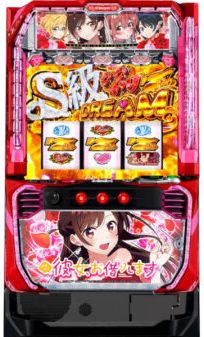

目次

Lパチスロ 彼女、お借りしますKANOKARI ｜ SANKYO（三共）
彼女、お借りします スペック・機械割
CZ確率・初当たり確率・機械割
| 設定 | CZ確率 | 初当たり確率 | 機械割 |
|---|---|---|---|
| 1 | 1/172 | 1/269 | 97.7% |
| 2 | 1/169 | 1/263 | 98.7% |
| 3 | 1/164 | 1/254 | 101.0% |
| 4 | 1/154 | 1/235 | 105.5% |
| 5 | 1/151 | 1/231 | 110.4% |
| 6 | 1/149 | 1/226 | 114.9% |
期待収支（1日8,000G消化時）
| 設定 | 等価 | 5.6枚交換 |
|---|---|---|
| 1 | -552pt | -1,249pt |
| 2 | -312pt | -983pt |
| 3 | +240pt | -390pt |
| 4 | +1,320pt | +571pt |
| 5 | +2,496pt | +1,620pt |
| 6 | +3,576pt | +2,579pt |
彼女、お借りします 小役確率
小役確率は現在解析待ちです。導入後に判明次第更新します。
| 項目 | 値 |
|---|---|
| コイン持ち | 約31.0G/50枚（設定1） |
彼女、お借りします 設定判別ポイント
CZ確率
設定1（1/172）〜設定6（1/149）で約15%の差。高設定ほどCZに入りやすくなります。
初当たり確率
設定1（1/269）〜設定6（1/226）で約19%の差。CZ確率と合わせて総合判断しましょう。
設定示唆演出
詳細は解析待ちです。導入後に判明次第更新します。
彼女、お借りします 天井・リセット
| 項目 | 内容 |
|---|---|
| 天井G数 | 1,000G+α |
| 天井恩恵 | ボーナス当選 |
| 設定変更後天井 | 600G+αに短縮 |
設定変更後は天井が600G+αに短縮されるため、朝一は非常に有利です。
彼女、お借りします AT詳細
CZ（チャンスゾーン）
| CZ名 | G数 | 期待度 |
|---|---|---|
| レンカノCHALLENGE | 15G+α | 約56% |
| 妄想DTチャレンジ | 10G | 約75% |
ボーナス種類
| 揃い目 | 名称 | 継続 | 獲得枚数 |
|---|---|---|---|
| 赤7揃い | かのかりBONUS（BB） | 30G | 約150枚 |
| 赤7・赤7・金7 | REGULAR BONUS（RB） | ベルナビ10回 | 約70枚 |
| 金7揃い | ななかりDREAM | 平均約80G上乗せ | 約550枚 |
1GレンCHANCE（1G連抽選ゾーン）
| 項目 | 内容 |
|---|---|
| 継続G数 | 1セット2G |
| 期待度 | 約40% |
| ストック | かのかりBONUS当選時に必ず1個ストック |
| ALL変換 | 成功時の一部で全ストックをななかりDREAMに変換 |
ななかりDREAM（上乗せ特化ゾーン）
| 種別 | 期待枚数 |
|---|---|
| 通常版 | 約550枚 |
| S級版 | 約2,910枚 |
エピソードBONUS
1G連規定回数達成（4の倍数）で突入。30G継続で約150枚獲得。
DREAM TIME（ストック特化ゾーン）
| 種別 | G数 | 平均ストック | 期待枚数 |
|---|---|---|---|
| 通常版 | 15G | 約2.5個 | 約1,390枚 |
| S級版 | 15G | 約6個 | 約2,590枚 |
ユメカノモード（引き戻しゾーン）
ボーナス後66G以内の引き戻しゾーン。期待度約58%。
有利区間
| 項目 | 内容 |
|---|---|
| G数上限 | なし（差枚数管理） |
| コンプリート | +19,000枚で作動 |
彼女、お借りします 打ち方
通常時
左1stのフリー打ちでOK。左リール上段に赤7または金7を狙うことで小役判別が可能です。
やめどき
ボーナス・AT終了後、有利区間リセットを確認してから即やめが基本です。
設定判別ツール
CZ回数・初当たり回数・総回転数を入力して設定を推測できます。
彼女、お借りします よくある質問
Lパチスロ 彼女、お借りしますの設定6機械割は？
設定6の機械割は114.9%です。設定1が97.7%で、設定3（101.0%）から機械割100%を超えます。AT純増約5.0枚/Gの差枚数管理型ATです。
彼女、お借りしますの天井は何ゲームですか？
天井は1000G+αでボーナスに当選します。設定変更後は600G+αに短縮されるため、朝一は有利です。
設定判別で重要な指標は？
CZ確率（設定1:1/172〜設定6:1/149）と初当たり確率（設定1:1/269〜設定6:1/226）が主要指標です。高設定ほどCZ・初当たりともに軽くなります。
ななかりDREAMとは？
金7揃いで突入する上乗せ特化ゾーンです。通常版は期待枚数約550枚、S級版は期待枚数約2,910枚。ALL変換発動で全ストックがななかりDREAMに変換されます。
1GレンCHANCEとは？
1セット2Gの1G連抽選ゾーンです。期待度約40%で、かのかりBONUS当選時に必ず1個ストックされます。成功時の一部でALL変換が発生し、全ストックがななかりDREAMに変換されます。
DREAM TIMEとは？
15G継続のストック特化ゾーンです。通常版は平均約2.5個ストック（期待枚数約1,390枚）、S級版は平均約6個ストック（期待枚数約2,590枚）です。
彼女、お借りしますのやめ時は？
ボーナス・AT終了後、有利区間リセットを確認してから即やめが基本です。天井1000G+αのため、ハマり台の天井狙いも有効です。設定変更後は600G+αに短縮されます。
コイン持ちはどれくらいですか？
通常時のコイン持ちは約31.0G/50枚（設定1）です。スマスロのためpt管理となりますが、天井1000G+αまで約1,600ptが目安です。